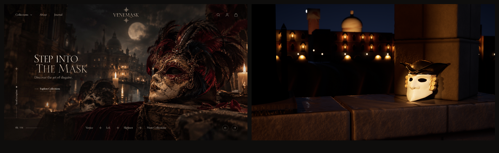
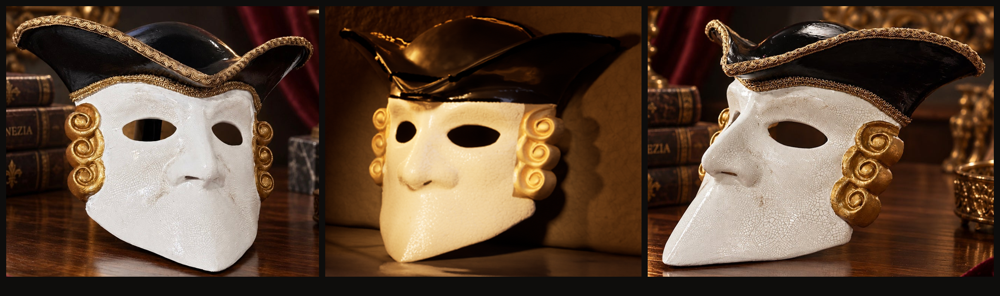
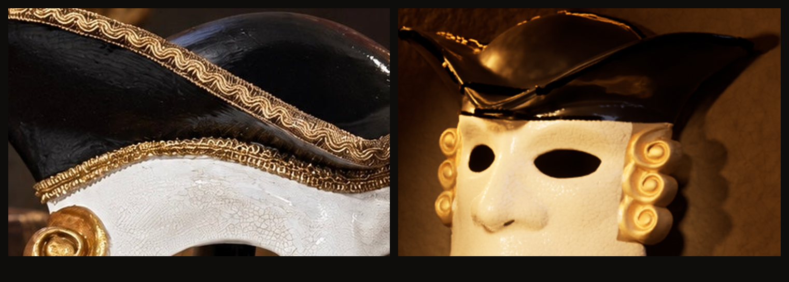
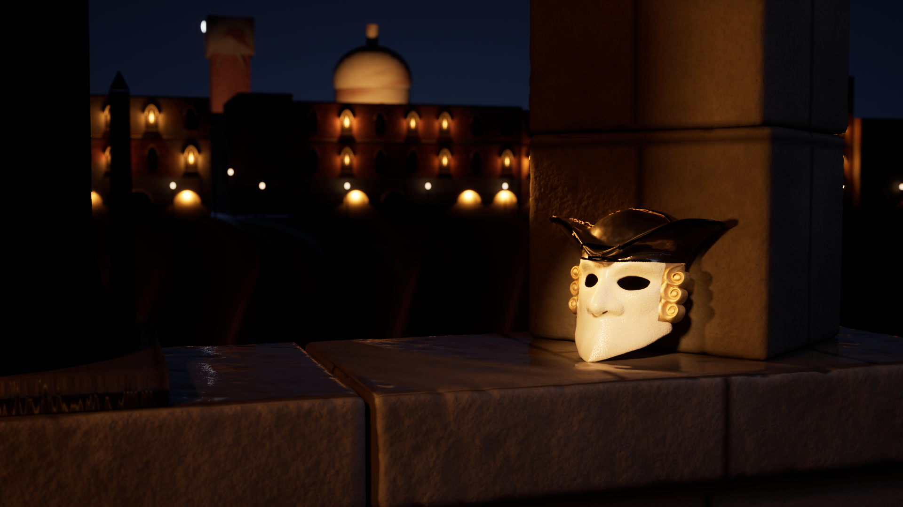
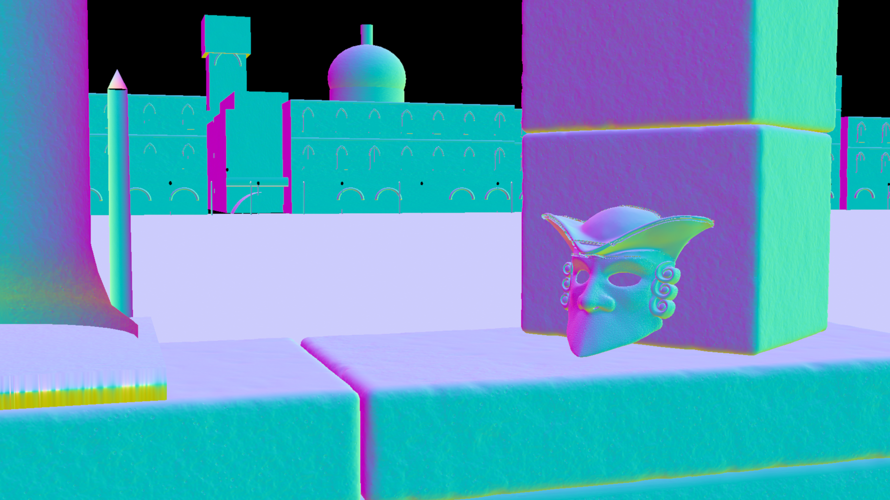
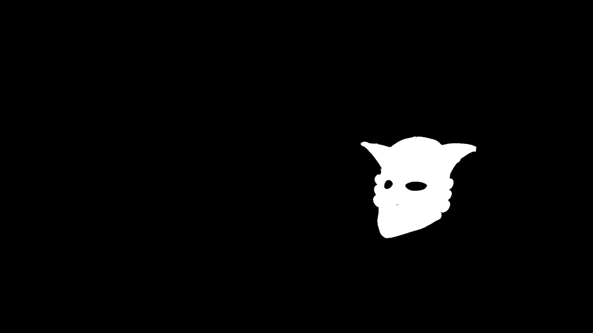
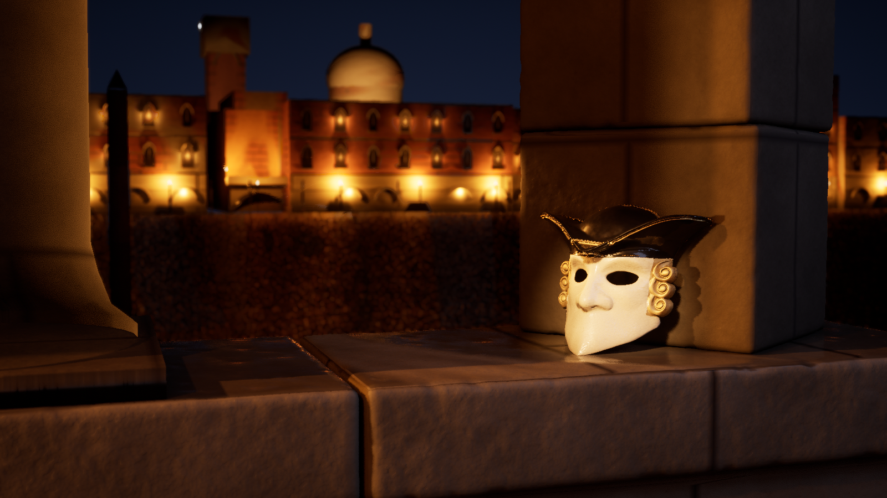

VENEMASK — Gate A · Hero · tur 2 (v6)
29 Ekim 2026 · Unreal Engine 5.8.1 · Path Tracer 256 spp · 1920×1080 · Cine Camera 42 mm f/6.3 · gerçek Casanova Bauta STL + fotoğraftan türetilen şerit geometrisi
GATE A: FAIL — yapı ve ürün doğru, malzeme zenginliği referansın altında
1 · Referans 02 ↔ Unreal render (aynı yükseklik)

2 · Ürün doğruluğu: mağaza fotoğrafı ↔ render ↔ yan fotoğraf (maske aynı yükseklikte)


3 · Tam kare ve kontrol pass'leri




4 · Önceki tur (v5) ile karşılaştırma

5 · Kontrol listesi
| Madde | Durum | Kanıt / not |
|---|---|---|
| Gerçek ürün kimliği | PASS | Casanova Bauta Mask — Eyes Wide Shut Inspired · id 7591523549267 · SKU 17629779130_3E08 · 3799.00 |
| Geometri | PASS | Kendi baskı STL'iniz; şekil değiştirilmedi |
| Altın şeritler | PASS (geometri) | Brim scroll ~6.5 mm + dalgalı kordon; band gimp ~3.5 mm; ölçü ve yerleşim fotoğraf 01/03'ten. İplik dokusu prosedürel (UNVERIFIED). |
| Craquelure | UNVERIFIED | Ölçek ve renk fotoğraf 01 yakın planına göre; gerçek desen taranmadı |
| Altın bukleler | PASS | Mat varak, çukurlarda umber (fotoğraf 03) |
| Eklenmemiş süsleme | PASS | Tüy, taş, ek süs yok |
| Fiziksel oturma / temas gölgesi | PASS | Çene taşta; 12° yaslı; Path Tracer gölge + yansıma |
| Kadraj (ref 02) | PASS | Sağ üçte bir maske; solda yakın sütun, su, cepheler, kubbe, ay |
| Alan derinliği | PASS | f/6.3: arka plan yumuşak ama okunur |
| Mimari | KISMEN | Gerçek kemer/sütun/korniş/pencere parçaları; balkon, heykel, bacalar yok |
| Taş / su malzemesi | KISMEN | Ashlar derz, ıslaklık, kir bandı; taranmış doku yok |
| Referans sınıfı his | FAIL | Malzeme zenginliği ve atmosferik ışık referansın altında |
6 · Varlıklar
Makinede bulunan Fab/Megascans içeriği orman temalı (yosun, kök, nehir kayaları); Venedik taşı/mimarisi için taranmış varlık yok. Fab indirmesi editör içinde Epic oturumu gerektirir. Tüm mimari ve dokular Scripts/ altındaki üreteçlerden.